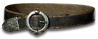

Set - Heyday
Terror of the Deep
4 items, level 77

Great White Terror
Kraken Shell
Defense: 417-523
Required Level: 74
+15-20% Physical Damage Reduction
Physical Damage Reduced By 20-30
-50% Lightning Resistance
+75% Fire Resistance
+20% Faster Run/Walk Speed
+50-100% Enhanced Weapon Damage

Feeding Frenzy
Giant Thresher
Damage: 40-114 (two-handed)
Required Level: 77
+300-350% Enhanced Weapon Damage
+100-200 to Maximum Damage
+6% Life stolen per hit
+6% Mana stolen per hit
(2 items) +45% Increased Attack Speed
(3 items) Adds 150-300 Damage

Mako's Quickness
Sharkskin Belt
Defense: 31-36
Required Level: 39
+130-160% Enhanced Defense
+25% Faster Run/Walk Speed
+15% Faster Hit Recovery
+25 to Dexterity
+20% Cold Resistance
(3 items) +25% to All Resistances

Hammerhead's Persistence
Sharkskin Boots
Defense: 33-39
Required Level: 44
+150-200% Enhanced Defense
+10% Physical Damage Reduction
+15% Deadly Strike
+50-100 to Life
(2 items) +15% Faster Run/Walk Speed
(4 items) +25% to All Resistances
Set bonuses
- 2 items: +25% Deadly Strike
- 3 items: +20% Increased Attack Speed
Full set
- +2 to All Skills
- +25% Chance of Crushing Blow
- +300% Enhanced Weapon Damage
- Adds 50-100 Damage
- +50% Chance of Open Wounds